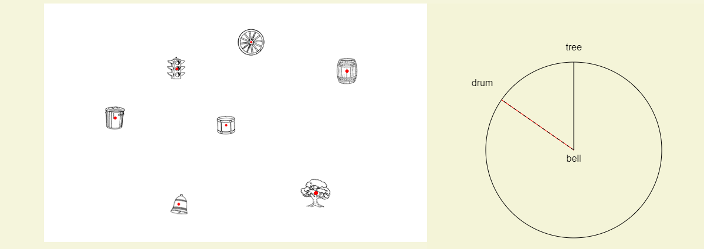

Look at the sample trial below.

In this example you are asked to imagine that you are standing at the bell facing the tree.
Your task is to draw a line indicating the direction to the drum.
In the sample trial this line has been drawn for you.
In the test trials, your task is to draw this line on the arrow circle using the computer mouse.
Can you see that if you were at the bell facing the tree the drum would be in the direction shown by the dotted line?
Now you will begin practicing on the computer.
Press the space bar to continue.